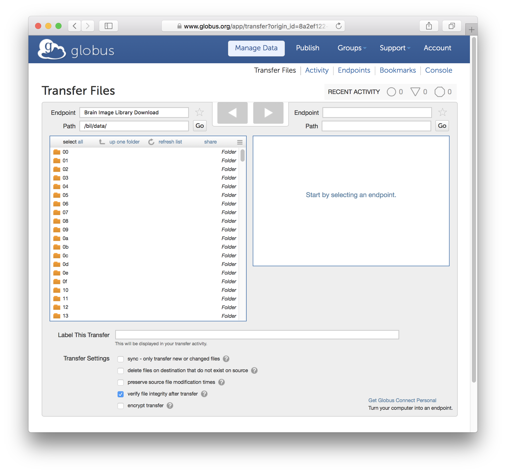
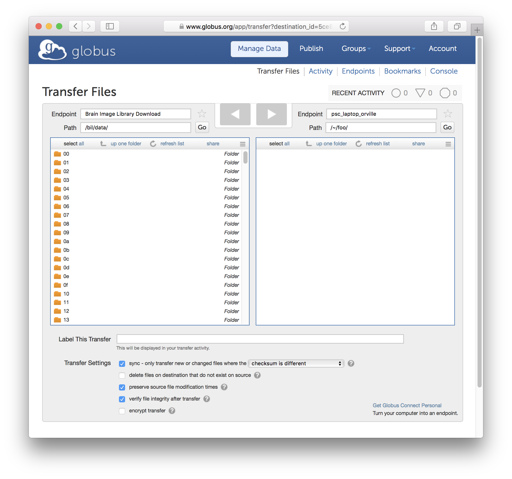
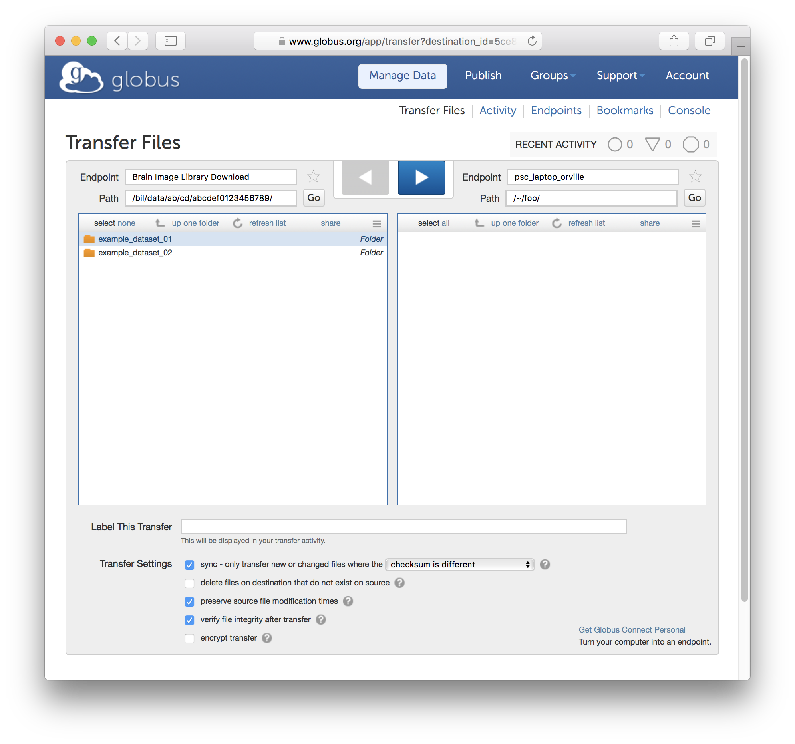
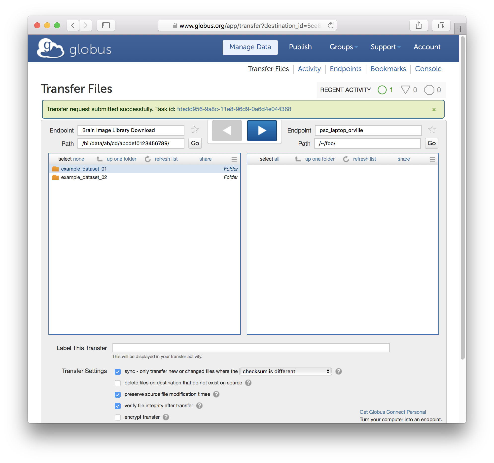
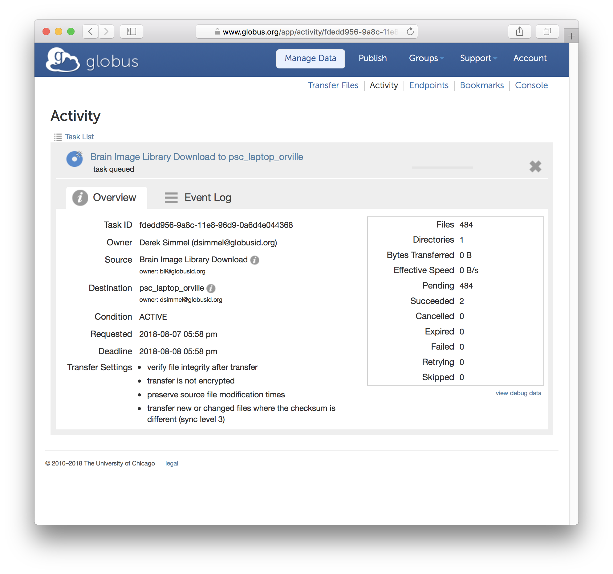

Downloading Data
Overview
There are many supported ways to download datasets from BIL including anonymous ftp, and Globus Online. This section discusses how to locate datasets in BIL and download them using these methods.- Locating Data: Datasets in BIL are uniquely referred to by a combination of a 16 digit unique identifier and the dataset name separated by a period.
- Using a web browser: HTTPS How to download datasets using a web browser.
- Anonymous FTP: How to download datasets using anonymous FTP.
- Using wget: How to download datasets using unix wget command.
- Using other clients:Advice on how to download datasets using other ftp clients.
- Globus: How to download datasets using Globus.
- Download Formats: A brief description of the download formats.
- Assistance and Help
- Distribution Licence
- Embargoed entries
- Citation of entries and use of non-embargoed pre-publication data
Download Steps
- Locating Data
Datasets in BIL are uniquely referred to by a combination of a 16 digit unique identifier and the dataset name separated by a period:
<16-digit-unique-identifier>.<Dataset-Name>
The file path to BIL entries will be:
/bil/data/<c1c2>/<c3c4>/<16-digit-unique-identifier>/<Dataset-Name>where <c1c2> are replaced by the first and second characters of the unique identifier and <c3c4> are replaced by the third and fourth characters of the unique identifier.
For example, the dataset: abcded0123456789.example_dataset_01 would be found down the following path:
/bil/data/ab/cd/abcdef0123456789/example_dataset_01/
- Using a web browser: HTTPS
To access the files, enter the following URL in your web browser:
https://download.brainimagelibrary.org/
The URL to access the example dataset mentioned above would be:
https://download.brainimagelibrary.org/ab/cd/abcdef0123456789/example_dataset_01/
- Anonymous FTP
- Using wget:
To download the files, use wget with the -r option and the URL to the desired dataset without the /bil/data path.
For example, to retreive the example dataset mentioned above with wget, enter:
wget -r ftp://download.brainimagelibrary.org:8811/ab/cd/abcdef0123456789/example_dataset_01/ - Using other clients:
Due to the variety of FTP clients produced, we can only offer the following general advice:
- Connect to the host: download.brainimagelibrary.org.
- Connect through port 8811. IMPORTANT: THIS IS NOT THE DEFAULT ANONYMOUS FTP PORT/.
- For some clients, you will have to use the complete file path to acces the data (e.g. begin with /bil/data).
- Using wget:
- Using Globus:
Login to the Globus transfer web service at www.globus.org. Select an Endpoint field and select 'Brain Image Library Download' (a shortcut is available as bil#download). Upon successful connection to the Brain Image Library Download server, you will land in the /bil/data directory, which lists the first layer of the 00..ff directory hierarchy. Navigate (or type the path in the Path field) to the directory containing the dataset(s) that you wish to download.
In the other Endpoint field, select (and if needed, authenticate to) your destination server. This may be a remote GridFTP server or your Globus Connect Personal endpoint. In the Transfer Settings section at the bottom, select the settings that apply to your download needs, e.g., "preserve source file modification times", "verify file integrity after transfer", etc.
Select the dataset(s) and/or files that you wish to download by highlighting their directory and/or file names.
Click the arrow button in the direction of the transfer from the Brain Image Library Download side toward your target Endpoint. This will schedule your transfer to begin. At this point you may log out of the Globus user interface and let the transfer proceed.
To check on the progress of your transfer, select the Activity tab in the globus.org interface, and then select the job corresponding to your transfer.
Upon successful completion of your transfer, the status page for your transfer will show 'Condition SUCCEEDED' - you will also receive an e-mail to notify you if your Globus account settings are configured to do so.

- Download Formats
Image files and Metadata files can be downloaded in the format as submitted to the library. Additional download file formats are expected to be added in 2018.
- Assistance and Help
If you need assistance with anything, please email: bil-support@psc.edu.
If you are having networking issues related to data transfer (including slow transfer speeds), email us at at bil-support@psc.edu and one of our networking experts will get in contact with you.
- Distribution Licence
BIL Data is distributed under the Creative Commons Attribution-ShareAlike 4.0 International License.
- Embargoed Entries
Data submitted to the library, by default, will be released as soon as possible once data has been validated. Optionally, data submitters can select a limited embargo period for their submitted data. Entries deposited with NIH BRAIN Initiative funding may request an embargo period not exceeding the limits outlined in the Notice of Data Sharing Policy for the BRAIN Initiative. All other deposited entries may request an embargo period of up to one year. Data subjected to embargo can not be downloaded.
- Citation of entries and use of non-embargoed pre-publication data
Please see this page for suggested acknowledgement text for entries from the Brain Image Library.
Use of Non-embargoed Pre-publication Data.
The library encourages researchers using datasets from the Brain Image Library for which there is no peer-reviewed publication identified, to contact the data producers to discuss possible coordinated publications and collaborations.